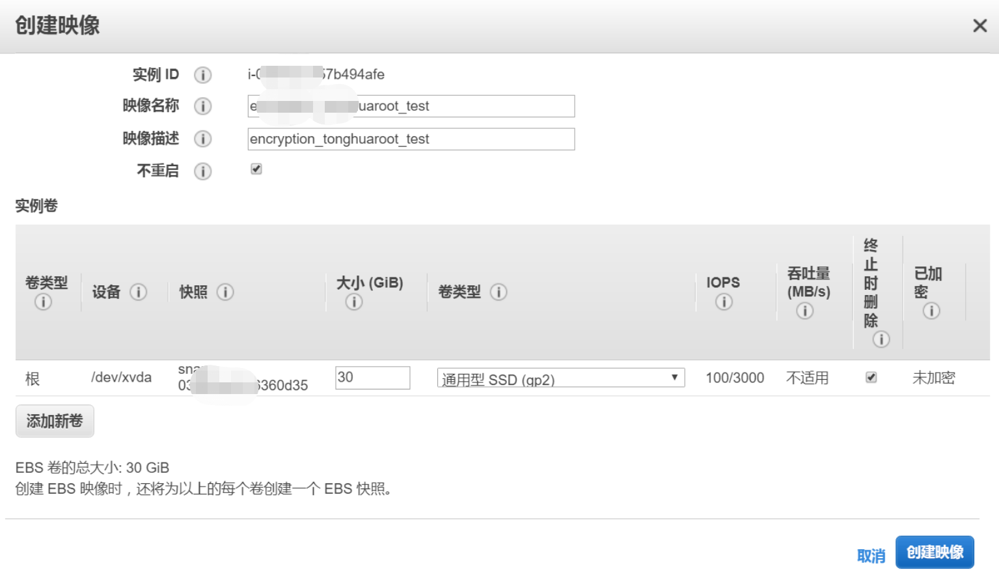
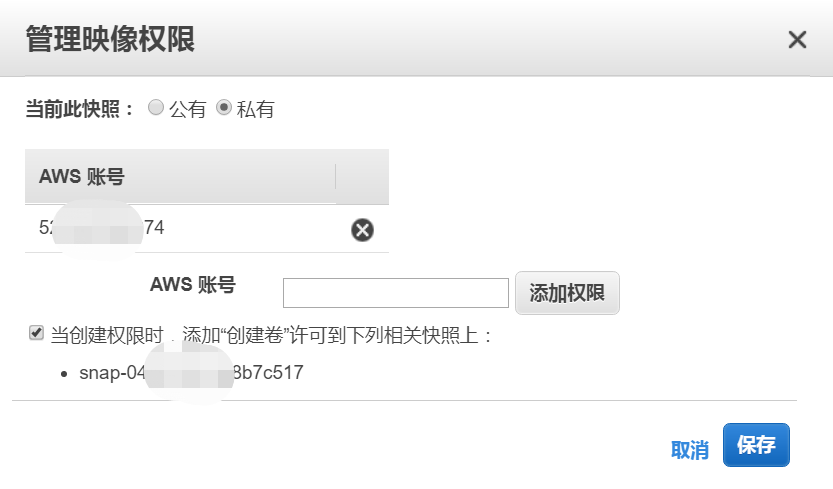
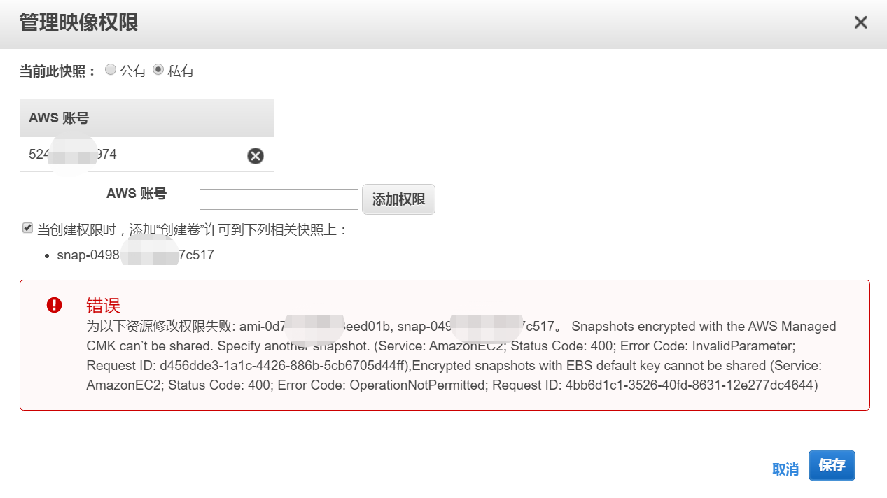
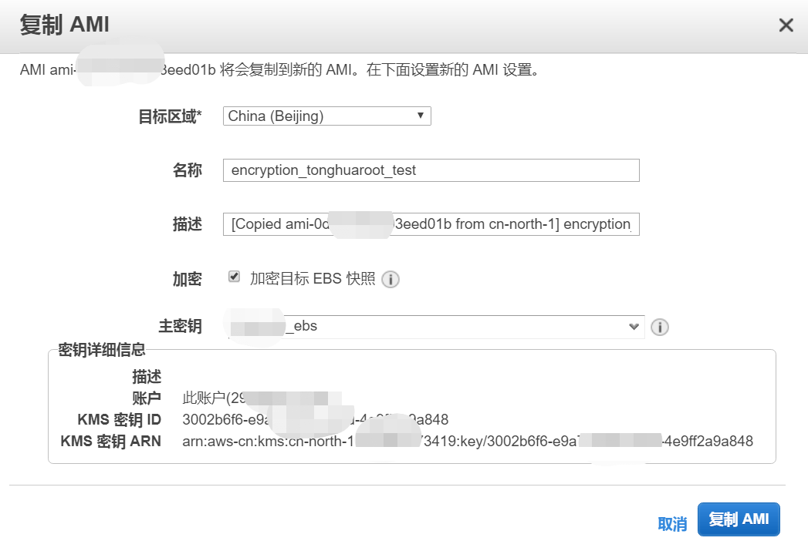
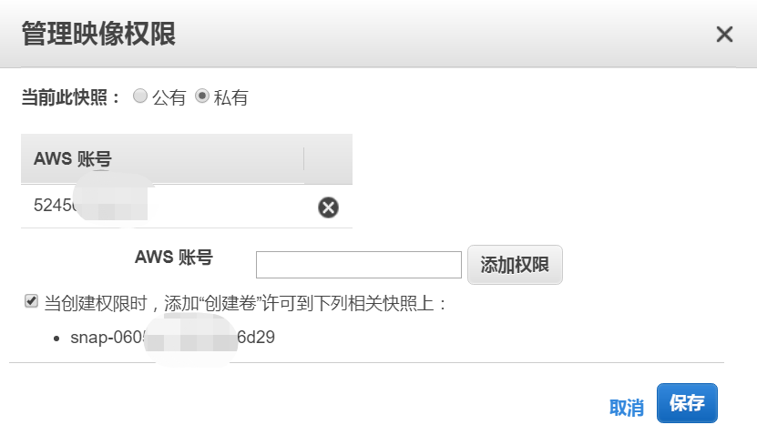
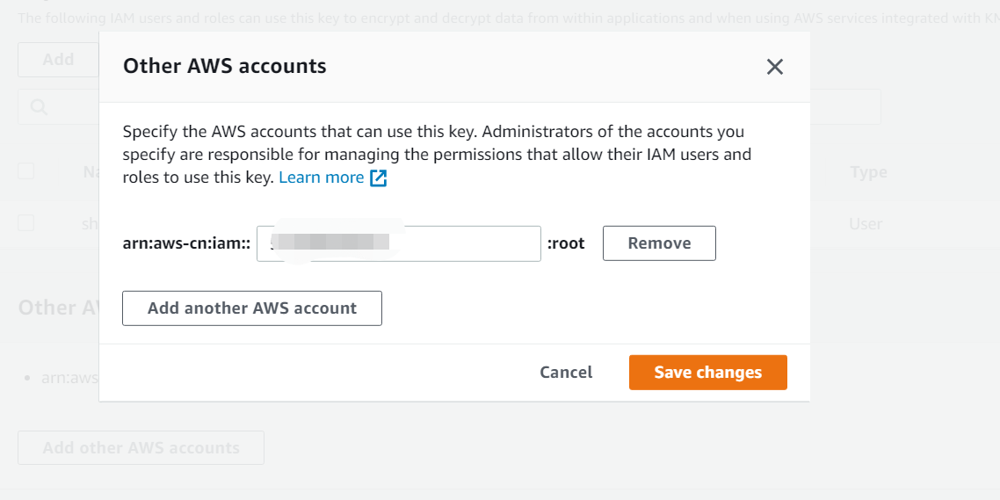
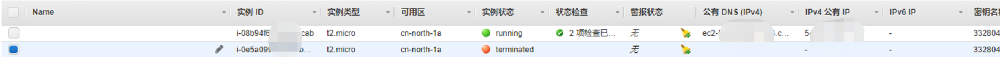

KMS：如果A账号的AMI使用AWS managed key加密需要将其共享给B账号应该如何操作？
0x00 场景分析
当前为A账号，我使用AWS中国区的KMS服务的AWS managed key加密了我的AMI，但是因为各种原因，我现在需要将我的AMI共享给B账号，应该如何操作？
0x01 操作步骤简述
AWS managed key是没有权限共享给其他账号的，因此思路就是复制AMI，修改其KMS加密Key为Customer managed keys，然后修改该Key的Policy，然后再将AMI共享给其他账号。
0x02 详细操作步骤
首先在A账号下做一个使用AWS managed key加密的ami：

这个时候，我们直接将该AMI共享给B账号，是直接失败的，会提示如下错误：1
Snapshots encrypted with the AWS Managed CMK can’t be shared. Specify another snapshot. (Service: AmazonEC2; Status Code: 400; Error Code: InvalidParameter; Request ID: d456dde3-1a1c-4426-886b-5cb6705d44ff),Encrypted snapshots with EBS default key cannot be shared (Service: AmazonEC2; Status Code: 400; Error Code: OperationNotPermitted; Request ID: 4bb6d1c1-3526-40fd-8631-12e277dc4644)


为了解决这个问题，我们需要复制该AMI，同时，此时的加密KMS Key应该替换为Customer managed key。操作步骤如下：


同时要保证B账号有使用该KMS Key加解密的权限。
示例Policy如下（本着最小权限的原则）：1
2
3
4
5
6
7
8
9
10
11
12
13
14
15
16
17
18
19
20
21
22
23
24
25
26
27
28
29
30
31
32
33
34
35
36
37
38
39
40
41
42
43
44
45
46
47
48
49
50
51
52
53
54
55
56
57
58
59
60
61
62
63
64
65
66
67
68
69
70
71
72
73
74
75
76
77
78{
"Id": "key-consolepolicy-3",
"Version": "2012-10-17",
"Statement": [
{
"Sid": "Enable IAM User Permissions",
"Effect": "Allow",
"Principal": {
"AWS": "arn:aws-cn:iam::1234567890123:root"
},
"Action": "kms:*",
"Resource": "*"
},
{
"Sid": "Allow access for Key Administrators",
"Effect": "Allow",
"Principal": {
"AWS": "arn:aws-cn:iam::1234567890123:user/shanchl"
},
"Action": [
"kms:Create*",
"kms:Describe*",
"kms:Enable*",
"kms:List*",
"kms:Put*",
"kms:Update*",
"kms:Revoke*",
"kms:Disable*",
"kms:Get*",
"kms:Delete*",
"kms:TagResource",
"kms:UntagResource",
"kms:ScheduleKeyDeletion",
"kms:CancelKeyDeletion"
],
"Resource": "*"
},
{
"Sid": "Allow use of the key",
"Effect": "Allow",
"Principal": {
"AWS": [
"arn:aws-cn:iam::1234567890123:user/shanchl",
"arn:aws-cn:iam::1234567890xxx:root"
]
},
"Action": [
"kms:Encrypt",
"kms:Decrypt",
"kms:ReEncrypt*",
"kms:GenerateDataKey*",
"kms:DescribeKey"
],
"Resource": "*"
},
{
"Sid": "Allow attachment of persistent resources",
"Effect": "Allow",
"Principal": {
"AWS": [
"arn:aws-cn:iam::1234567890123:user/shanchl",
"arn:aws-cn:iam::1234567890xxx:root"
]
},
"Action": [
"kms:CreateGrant",
"kms:ListGrants",
"kms:RevokeGrant"
],
"Resource": "*",
"Condition": {
"Bool": {
"kms:GrantIsForAWSResource": "true"
}
}
}
]
}
如果对这个Policy不熟悉的话，直接在控制台添加账号ID即可：

有KMS Key的权限的话，可以直接启动EC2实例，如果没有权限的话，启动成功但是会被terminated掉。

0x03 总结
这个有两个坑点：
- 我以为可以直接分享AWS Managed key加密的AMI，然后运行的时候报没权限，实际测试下来当我分享的时候就直接报错了。
- 我以为加密的AMI共享成功，但是没有KMS CMK的访问权限的话，启动实例的时候会报没有权限的错误，但是实际测试下来，是实例可以正常启动，但是会被瞬间terminated掉。
interesting